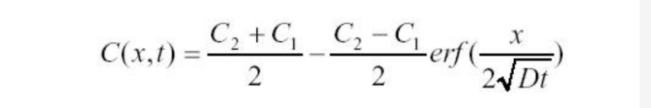
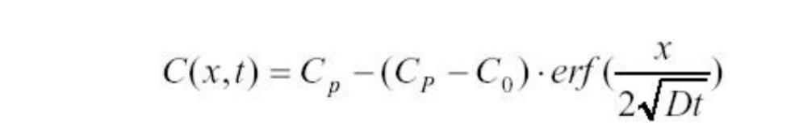
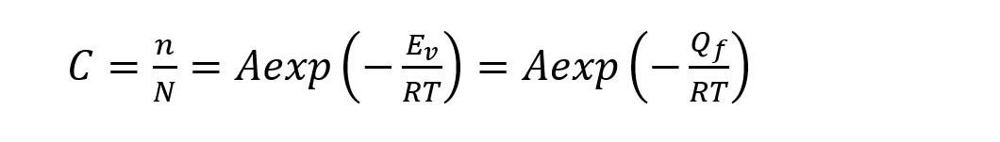

🙄背
🎈名词解释
💢晶带轴
- 所有平行或相交于某一晶向直线的晶面构成晶带，此直线称为晶带轴。属此晶带的晶面称为共带面。
💢孪生
- 晶体受力变形后，以产生孪晶的方式进行切边的过程称为孪生。这样的切变并未使晶体的点阵类型发生变化，但它却使均匀切边区中的晶体取向发生改变，变为与未切边区晶体呈镜面对称的取向。
💢恒温转变

💢交替共聚物
- 两种单体在大分子链上严格相间排列所形成的共聚物
💢嵌段共聚物
- 每个链由单体嵌段组成，因此，这些材料称为嵌段共聚物，由单体群的链段区域与另一类单体群的链段区域组成。
💢互扩散
- 两组分的的质量扩散通量大小相等，方向相反，这种扩散称为互扩散。
💢晶向族
- 晶体中因对称关系而等价的各组晶向可归并为一个晶向族，用<uvw>表示
💢晶面族
- 在晶体中晶面上的原子排列情况以及晶面间距完全相同但空间位向不同的各组晶面称为晶面组，用{uvw}表示
💢各向异性
- ①各向异性：晶体沿晶格的不同方向,原子排列的周期性和疏密程度不尽相同，由此导致晶体在不同方向的物理化学特性也不同
- ②各向同性：材料的性质和测量方向无关
💢键能曲线
- 表示了当作用于原子或离子上的力仅为引力或斥力时能量随位置的变化
💢共格界面
- 晶面上的原子同时位于两相晶格的节点上，两相晶格是彼此衔接的，晶面上的原子为两者共有。
💢热塑性聚合物
- 能反复加热熔化，在软化或流动状态下成型，冷却后能保持模具形状的高分子聚合物，为线性或含少量支链结构的高分子化合物，聚合物大分子之间以物理力聚合而成，加热时可熔融，并能溶于适当溶剂中。
💢上坡扩散
- 物质从低浓度向高浓度方向的扩散，产生成分的偏聚而不是成分的均匀化，这种扩散称为上坡扩散。
💢非晶体
- 原子在三维空间不呈现周期重复排列的物质
💢非共格相界
- 当两相在相界面处的原子排列相差很大时，只能形成非共格相界面，可看成是由原子不规则排列很薄的过渡层构成的。
💢表面扩散
- 是指原子、离子、分子以及原子团在固体表面沿表面方向的运动
💢点阵常数
- 晶胞的大小取决其三条棱的长度a、b和c，而晶胞形状取决于这些棱之间的夹角α、β、Υ，将a，b，c三个参量称为点阵常数
💢伯氏矢量
- 用来描述位错引起晶格畸变的物理量。该矢量的模是位错的强度，表示晶格总畸变的大小，其方向表示晶格点阵畸变的方向。一般情况下，该矢量越大，晶体畸变的程度越大。
💢玻璃转变温度
- 如果材料从液相的冷却速度很大，使结晶的形核生长来不及进行，则可以避开结晶，在熔点以下以过冷液体的形式继续冷却。当温度降至某一温度Tg以下时，液相的粘度大大增加，原子迁移难而处于“冻结”状态，结晶过程被抑制进入了玻璃态，这一温度Tg称为玻璃转变温度
💢聚合物的构型
- 是指在分子中由化学键所固定的几何排列，这种排列是稳定的，要改变构型必须通过化学键重组和断裂
💢电子浓度
电子浓度=合金的价电子数/原子数
💢本质晶粒度
- 是根据标准试验方法，在930℃±10℃保温3-8h后测定钢中晶粒的大小，表示钢在一定条件下奥氏体晶粒长大的倾向性。
💢孪晶
- 在切应力的作用下，晶体的一部分沿着特定的晶面（孪生面）和晶向（孪生方向）相对于晶体的另一部分作均匀切变时所产生的变形。孪生变形后两部分的晶体取向不同，恰好以孪生面作为对称轴面形成镜像对称，形成孪晶。
💢铃木气团
- 层错与溶质原子发生交互作用，使层错附近的溶质浓度不同于基体的溶质浓度，这种现象称为铃木效应。当溶质原子偏聚在层错附近，使其溶质浓度大于基体中浓度时，即形成了铃木气团。
💢什么是面缺陷？
- 面缺陷，其特征是在一个方向上尺寸很小，另外两个方向上扩展很大，也称二维缺陷。晶界、相界、孪晶界和堆垛层错等都属于面缺陷
💢面密度
- 晶面中某一晶面单位面积上的原子数目
💢线密度
- 沿一个方向单位长度上相同阵点的数目
💢自扩散
- 不依赖浓度梯度，仅由热振动而产生的扩散
💢相
- 晶体中具有同一聚集状态、同一晶体结构和性质并以界面相互分隔开的均匀组成部分。
💢临界分切应力
- 晶体的滑移是在切应力作用下进行的，但其中许多滑移系并非同时参与滑移，而只有当外力在某一滑移系中的分切应力达到一定的临界值时，该滑移系方可首先发生滑移，该分切应力称为滑移的临界分切应力。
💢晶界
- 多数晶体物质由晶粒所组成，属于同一固相而位向不同的晶粒间的界面称为晶界。
💢密排面
- 滑移总是沿着晶体中原子密度最大的晶面（密排面）和其上原子密度最大的晶向（密排方向）进行，这是由于密排面之间间距最大，密排方向之间的原子间距最小。因此该滑移面称为密排面，滑移方向为该面上的密排方向。
💢杠杆定律
- 某一成分的二元合金在某温度时，处于二元相图的两相区内，则两相之间的质量比可用“杠杆法则”求得。在此温度处做一条水平线与该两相区的相界线相交，两个交点内水平线被合金的成分垂线分成两段，两相的质量比与这两线段的长度成反比，用相对百分数表示，这个现象好像力学中的杠杆，所以称为“杠杆定律”。
💢位错滑移
- 是在外加切应力的作用下，通过位错中心附近的原子沿伯氏矢量方向在滑移面上不断地作少量的位移(小于一个原子间距)而逐步实现的，这样的运动方式称为位错的滑移。
💢网络修饰体
- 满足扎卡赖亚森规则的氧化物能形成大面积的三维玻璃网络，称为网络形成体。其中不能形成大的一次键网的氧化物称作网络修饰体。
💢相区接触法则
- 两个单相区间必定有一个由该两相组成的两相区，把它们分开，而不能以一条线接界。两个两相区必须以单相区或三相水平线隔开，也就是说，在二元相图中，相邻相区的相数差为1（点接触除外），这个规则称为相区接触规则。
💢多系滑移
- 滑移首先在取向最有利的滑移系（其分切应力最大）中进行，但由于变形时晶面转动的结果，另一组滑移面上的分切应力也可能逐渐增加到可以发生滑移的临界分切应力上，于是晶体的滑移就可能在两组或更多的滑移面上同时或交替地进行，从而产生多系滑移。
💢组织
- 用肉眼或者显微镜所观察到的组成相的形状，分布，以及各相之间的组合状态称为组织。
💢堆垛因子
- 晶体结构中原子占据的体积和可利用的总体积的比率定义未堆垛因子。
💢晶粒
- 结晶物质在生长过程中，由于受到外界条件限制，未能发育成规则形态的晶体，而只是结成颗粒状，晶体内部的这种小颗粒称为晶粒。
💢有序固溶体
- 对某些成分接近一定原子比的无序固溶体中，它从高温缓冷到某一临界温度以下时，溶质原子会从统计随机分布状态过渡到占有一定位置的规则排列状态发生有序化过程，形成的固溶体称为有序固溶体。
💢相图
- 是描述系统中各相存在的平衡条件以及相与相之间平衡关系的图解。
💢固相线
- 由凝固终结温度连接起来的相界线，称为固相线。
💢固溶度线
- 相图中代表固溶度极限的温度点连接起来的相界线，称为固溶度线。
💢位错塞积
- 当位错运动遇到障碍（晶界、第二相粒子等）如果它向前的动力不足以克服障碍物的力，位错就会停在障碍物前面，由同一位错源放出的其他位错也会被阻在障碍物前，这种现象称为位错塞积。
💢倾斜晶界
- 由晶界两侧晶体倾斜而成，分为对称倾斜晶界和不对称倾斜晶界
💢扭转晶界
- 晶体两部分沿垂直于界面轴旋转一个角，形成扭转晶界。扭转晶界是由两组相交的螺型位错所构成。
🎈简答题
①②③④⑤⑥
🔎小角度晶界的结构
- 对称倾斜晶界
- 对称倾斜晶界可看作把晶界两侧晶体互相倾斜的结果。其晶界可看成是由一列平行的刃型位错所构成。
- 不对称倾斜晶界
- 如果倾斜晶界的界面绕x轴转了一角度，则两晶粒之间的位向差仍为0角，但晶界的界面对于两个晶粒是不对称的，称为不对称倾斜晶界。该晶界结构可看成由两组伯氏矢量相互垂直的刃位错交错排列构成。
- 扭转晶界
- 可看成是两部分晶体绕某一轴在一个共同的晶面上相对扭转一个A角所构成的，扭转轴垂直于这一共同的晶面。扭转晶界的结构可看成是由互相交叉的螺型位错所组成。
🔎枝晶偏析会对材料的性能产生哪些不利的影响？如何消除
- （1）枝晶偏析是由非平衡凝固造成的，这使先凝固的枝干和后凝固的枝干间的成分不均匀。合金通常以树枝状生长，一棵树枝晶就形成一颗晶粒，因此枝晶偏析在一个晶粒范围内，故也称为晶内偏析
- （2）严重的偏析会使合金的力学性能下降，特别是塑性和韧性显著降低，甚至使合金不容易进行压力加工，还会使合金的耐蚀性下降。
- （3）消除方法：枝晶偏析是非平衡凝固的产物，在热力学上是不稳定的，通过“均匀化退火”或称“扩散退火”，即在固相线以下较高的温度经过长时间的保温使原子扩散充分，使之转变为平衡组织。
🔎冷变形金属在退火过程中发生回复，请问回复机制及其驱动力是什么？
-
①低温回复（0.1~0.3Tm）。低温时，回复主要与点缺陷的迁移有关。
- 机制：空位或间隙原子移动到晶界或位错处消失；空位与间隙原子相遇复合；空位集结形成空位对或空位片，降低点缺陷密度
-
②中温回复（0.3~0.5Tm）。主要与位错的滑移有关
- 机制：位错的滑移或交滑移，使异号位错相遇抵消，位错缠结重新排列组合，使晶粒规整化
-
③高温回复（>0.5Tm）。刃型位错可获得足够的能量产生攀移。
- 高温回复多边化过程的驱动力主要来自应变能的下降。从本质上看也包含位错的滑移和攀移。通过攀移使同一滑移面上异号位错相抵消，位错密度下降，位错重排成较稳定的组态，构成亚晶界，形成回复后的亚晶结构(即多边化结构)。
-
回复驱动力：冷变形存储能
🔎什么是柯垂尔气团，基于柯垂尔气团说明固溶强化的机理
- 柯垂尔气团：通常认为在固溶体合金中，溶质原子或杂质原子可以与位错交互作用而形成溶质原子气团，即所谓的Cottrell气团。由刃型位错的应力场可知，在滑移面以上，位错中心区域为压应力，而滑移面以下的区域为拉应力。若有间隙原子C，N或比溶剂尺寸大的置换溶质原子存在，就会与位错交互作用偏聚于刃型位错的下方，以抵消部分或全部的张应力，从而使位错的弹性应变能降低。当位错处于能量较低的状态时，位错趋向稳定不易运动，即对位错有着“钉扎作用”，尤其其在体心立方晶体中，间隙型溶质原子和位错的交互作用很强，位错被牢固地钉扎住。位错要运动，必须在更大的应力作用下才能挣脱Cottrell气团的钉扎而移动，这就形成了上屈服点；而一旦挣脱之后位错的运动就比较容易，因此有应力降落，出现下屈服点和水平台。这就是屈服现象的物理本质。
🔎晶态材料和非晶态材料的主要区别？
- ①与晶体材料相比，非晶形态材料在一般条件下凝固时，不容易改变原子间相互结合方式和排列方式从而形成晶体。
- ②从内部原子(或离子、分子)排列的特征来看，晶体结构的基本特征是原子在三维空间呈周期性排列，即存在长程有序，而非晶体中的原子却没有长程有序的特点。非晶体材料的主要理论模型有微晶模型、随机密堆模型、无规网络模型。
- ③非晶材料与晶体材料相比，没有固定的熔点，同时晶体材料具有各向异性而各向同性。
- ④非晶材料与晶体材料相比通常具有较高的硬度和粘滞系数。
- ⑤晶体材料的制备工艺与非晶材料的制备工艺相比，非晶材料需要高得多的冷却速度。
🔎液态金属结晶时晶粒细化的措施
- ①增大过冷度：减少临界晶核半径，提高单位体积内的形核率，达到细化晶粒的效果。
- ②变质处理：由于实际生产 的凝固均为非均匀形核，为了提高形核率，通常在溶液凝固之前 作为非均匀形核基底的人工形核剂，也称孕育剂或变质剂。
- ③振动与搅拌：对金属溶液凝固时施加振动或搅拌作用可以获得细小的晶粒，振动方式可采用机械振动、电磁振动或超声波振动等，都具有细化晶粒的效果。因为一方面可以靠这种外部输入能量的方法促进形核，另一方面振动使枝晶破碎，而这些碎片又可以作为结晶核心，提高形核率。
🔎对比分析再结晶和结晶的主要区别和联系
- ①结晶时形核和长大的驱动力是新、旧两相的化学位差，再结晶形核和长大的驱动力是变形储存能。
- ②结晶时的形核常为非均匀形核，再结晶型形核常在现有的变形不均匀区域内，如晶界附近、切变带、形变带、第二相粒子周围。
- ③结晶长大时与母相不会有取向关系，再结晶长大时可能有 定的取向关系。
- 联系：形成过程都需要驱动力，都有形核过程
🔎再结晶形核
（1）晶界弓出形核
- 一般变形程度较小(一般小于20%)时发生。A、B两相邻晶粒，B晶粒变形度较大，位错密度高，多边化后，亚晶尺寸细小。为了降低系统的自由能，在一定温度条件下，晶界处A晶粒的某些亚晶晶界弓出迁移进入B晶粒，吞食B晶粒中亚晶，开始形成无畸变的再结晶晶核。
（2）亚晶形核
- 一般在大的变形度下发生。当变形度较大时，晶体中的位错不断增殖，由位错缠结组成胞状结构胞状结构在加热过程中发生胞壁平直化，并形成亚晶借助亚晶作为再结晶的核心，其形核机制又可分为以下两种：
- ①亚晶合并机制
- 在变形程度较大且具有高层错能的金属中发生。
- 在回复阶段形成的亚晶，其相邻亚晶边界上的位错网络通过解离、拆散、位错攀移与滑移，逐渐转移到周围其他亚晶界上，导致相邻亚晶边界的消失和亚晶的合并。
- 合并后的亚晶，尺寸增大，亚晶界上位错密度增加，使相邻亚晶的位向差增大，逐渐转化为大角度晶界它比小角度晶界具有大得多的迁移率，故迅速移动，清除其移动路程中存在的位错，使它后面留下无畸变的晶体，构成再结晶核心
- ②亚晶迁移机制
- 变形度很大的低层错能金属中发生。
- 位错密度较高的亚晶界两侧的亚晶位向差较大，加热过程中，容易发生迁移并逐渐变为大角度晶界而成为再结晶核心而长大。
🔎根据键能曲线分析，为什么很 到既具有高的弹性模量，又具有高的线膨胀系数的材料？
- 随着键能曲线不对称性的增加材料的线膨胀系数增加，随着键能曲线能量势阱深度的增加材料的弹性模量增加，而在曲线深度增加时对称性随之增加即曲线不对称性降低，故很难找到既具有高的弹性模量又具有高的线膨胀系数的材料。
🔎立构规整度是如何影响聚合物结晶度和宏观性质的
- 结晶需要形成密堆砌，高分子链的规整度越高，越容易形密堆砌，聚合物的结晶性就越好。聚合物的结晶性越好，其密度越高，拉伸强度和弹性模量增大，耐溶剂性更好，对气体，液体的渗透性降低，但是其冲击强度降低。
🔎一个位错环能否各部分都是螺型位错或者刃型位错，为什么？
- ①螺型位错的伯氏矢量与位错线平行，而一个位错只有一个伯氏矢量，一个位错环不可能与一个方向处处平行，所以一个位错环不能各部分都是螺型位错。
- ②刃型位错的伯氏矢量与位错线垂直，如果伯氏矢量垂直位错环所在平面，则位错环处处都是刃型位错，这种位错也叫作棱柱位错。
🔎简述固溶体研究的实际意义
- ①固溶体指的是溶质原子溶入溶剂晶格中仍保持溶剂类型的合金相。
- ②虽然晶体的宏观结构和对称性不变，但微观结构上如结点的形状，大小可能随成分的变化而变化，当溶质含量很少时，固溶体性能与固体金属性能基本相同，但随溶质元素含量增多，会使金属的强度和硬度提高，塑性韧性有所下降，这种现象称为固溶强化。
- ③适当控制溶质含量以使固溶体在具有高强度硬度的同时保持足够高的塑性和韧性，从而具有较好的综合力学性能，因此要求综合力学性能的结构材料几乎都以固溶体为基本相、这就使固溶强化成为一种十分重要的强化方法，并在工业生产中得以广泛应用，因此，对固溶体的研究具有重要的实际意义。
🔎玻璃容器、窗户玻璃采用的是纳钙硅玻璃，而坩埚采用石英制成
- 在前一种应用中，在服役时玻璃不必经受高温，所以，它不需要过高的Tg。因为制造玻璃的器件必须在Tg以上的温度完成，原因是在Tg以上粘度低，使形状改变成为可能，由于制造玻璃的成本很大一部分是与为了成型操作而把玻璃温度提升到Tg以上所需的能源的成本有关，所以低Tg的玻璃成分有显著的经济效益。而坩埚苛刻的高温服役环境要求用没有网络修饰体的玻璃成分。
🔎聚丙烯比聚乙烯更不易结晶，但却比聚苯乙烯，更易结晶
- 侧基的大小：聚苯乙烯(苯基)>聚丙烯(甲基)>聚乙烯(H原子)
- 具有大尺寸和容积大的侧基的聚合物不能有效的堆垛。
🔎解释离子晶体中掺杂会引起附加空位浓度的原因
- 离子晶体中通常允许掺入一些置换型杂质，但其条件是要保持电中性。这种掺杂可用相似的阴离子来实现 也可通过相似的阳离子代替基体的阳离子来实现，后者比较普遍。
- 当阳离子杂质所具有的电荷与基体阳离子不同时，这种置换就制造出另外的缺陷，当Ca2+置换NaCl中的Na+时，相当于一个Ca2+置换两个Na+而只占据了一个结点位置，于是这种杂质的掺入就导致了阳离子空位。
🔎如何获得细晶组织
- ①结晶过程中可以通过增加过冷度，变质处理，振动及搅拌的方法增加形核率细化晶粒。
- ②对于冷变形的金属可以通过控制变形度、退火温度来细化晶粒。
- ③可以通过正火、退火的热处理方法细化晶粒。
- ④可以在钢中加入合金元素，形成新相从而抑制晶粒长大。
🔎根据点缺陷的形成机理，说明点缺陷可以分为几类
- 可分为空位、间隙原子、杂质或溶子以及由它们组成的复杂点缺陷。
- ①空位：在晶体中，位于点阵结点的原子并非静止的，而是以其平衡位置为中心作热振动。当某原子足够大的振动能而使振幅增大到一定限度时，就有可能克服周围原子对它的制约作用，跳离原来的位置，使点阵中形成空位
- ②间隙原子：在形成空位的同时，脱离开原来平衡位置的原子迁移到晶格间隙处 就形成间隙原子。
- ③置换原子：当异类原子进入金属晶体时，可以占据原来基体原子的平衡位置，从而形成间隙原子。
- 点缺陷的存在也导致晶体性能发生一定改变。例如，它使得金属的电阻增加，体积膨胀，密度减小，使离子晶体的导电性改善。另外，过饱和点缺陷，如淬火空位、辐照缺陷，还可以提高金属的屈服强度。
🔎简述聚合物力学三态的分子运动特点
- ①玻璃态：在Tg温度以下，分子的动能较小，不足以克服主链内旋的能量，因此不足以激发起链段的运动，链段被“冻结”，此时，只有比链段更小的运动单元，如链节，侧基等能运动，因此高分链不能实现一种构象到另一种构象的变化
- ②高弹态：温度提高到Tg以上，分子本身的动能增加，额外的膨胀使自由体积增多，链段的自由旋转成为可能，链段可以通过主链中单键内旋不断改变构象，然而，此时的分子动能尚不足以使高分子链发生整体运动，不能产生分子链间的相对滑动。
- ③黏流态：当温度超过Tr时，分子的动能继续增大，有可能实现许多链段同时或相继向一定方向的移动，整个大分子链质心发生相对位移，因此，受力时极易发生分子链间的相对滑动。
🔎简述金属中晶界的特性
- ①晶界处点阵畸变大，存在着晶界能，因此，晶粒的长大和晶界的平直化都能减小晶界面积，从而降低晶界的总能量，这是一个自发过程。
- ②晶界处原子排列不规则，因此在常温下晶界的存在会对位错的运动起阻碍作用，致使塑性变形抗力提高，宏观表现为晶界较晶内具有较高的强度和硬度。晶粒越细，材料的强度越高，这就是细晶强化；而高温下则相反，因高温下晶界存在一定的黏滞性，易使相邻晶粒产生相对滑动。
- ③晶界处原子偏离平衡位置，具有较高的动能，并且晶界处存在较多的缺陷，如空穴、杂质原子和位错等，故晶界处原子的扩散速度比在晶内快得多。
- ④在固态相变过程中，由于晶界能量较高且原子活动能力较大，所以新相易于在晶界处优先形核。显然，原始晶粒越细，晶界越多，则新相形核率也相应越高。
- ⑤由于成分偏析和内吸附现象，特别是晶界富集杂质原子情况下，往往晶界熔点较低，故在加热过程中，因温度过高将引起晶界熔化和氧化，导致“过烧”现象的发生。
- ⑥由于晶界能量较高、原子处于不稳定状态，以及晶界富集杂质原子的缘故，与晶内相比，晶界的腐蚀速度一般较快。
🔎试比较金属晶体，离子晶体与聚合物中的扩散机制
- 金属晶体：金属晶体中，原子可跃迁到邻近的任何空位和间隙位置，有交换机制，间隙机制，空位机制等。
- 离子晶体：离子只能进入具有相同电荷的位置，离子扩散只能依靠空位机制进行，且为了保持电中性，必须产生成对的缺陷。
- 聚合物：其机制与非离子晶体中的间隙扩散相似，在聚合物内扩散分子从一个开放体积区域迁移到另一个类似的开放体积区域需要能量。在金属、离子晶体中的杂质扩散是由单个原子或离子穿过点阵进行的，而在非晶态聚合物区域的相对开放的结构中则整个分子可以穿过点阵扩散。
🔎 什么是高分子的链的构型，包含哪几种类型？
- 构型是指在分子中由化学键所固定的几何排列，这种排列是稳定的，要改变构型必须通过化学键的重组和断裂。
- 高分子链的构型又分为旋光异构和几何异构两种：
- ①旋光异构：
- 全同立构：当全部CH3取代基处于主链一边时，即全部由一种旋光异构体连接而成的高分子称为全同立构。
- 间同立构：当取代基CH3交替处于主链两侧时，即由两种旋光异构单元交替地连接成的高分子称为间同立构。
- 无规立构：当取代基在主链两边不规则排列，即两种旋光异构单元完全无规连接成的高分子称为无规立构。
- ②几何异构
- 双烯类单体 1，4加成时，高分子链每一个单元中有一个内双键，可构成顺势和反式两种构型，称为几何异构体。
- ①旋光异构：
🔎简述高分子链柔顺性的本质
- ①分子链的运动起因于主链中单键的内旋转，内旋越自由，蜷曲的趋势越大，表明高分子链的柔顺性越好
- ②由于单键内旋转导致了原子排布方式的不断变换，产生了分子在空间的不同形态称为构象
- ③如果把高分子链看作是由许多刚性的链段组成的柔顺链，那么链段就成为高分子链的独立运动的基本单元，每个链段的运动是各不相关完全独立的，用链段长度的大小可表征高分子链的可动性即柔顺性。
🔎玻璃具有各向同性的原因是什么？
- 玻璃是由高温态液体急冷形成，单个晶粒没有足够时间生长，最终呈现一种非晶态。其由许多晶粒组成，每个晶粒内部，晶格位向完全一致，而各个晶粒之间，彼此的位向不相同，其性质是各个晶粒性能的统计平均值，故其在各个方向上的性能大致相同。
🔎应变硬化在生产中有何意义？作为一种强化方法，它有什么局限性？
- 不利方面
- ①由于金属在加工过程中塑性变形抗力不断增加，使金属冷加工需要消耗更多的功率
- ②由于应变硬化使金属变脆，因而在冷加工过程中需要进行多次中间退火，使金属软化，能够继续加工而不至于裂开
- ③有的金属（如铼）尽管某些使用性能很好，但由于解决不了加工问题，其应用受到很大限制
- 有利方面
- ①有些加工方法要求金属必须有一定加工硬化
- ②可以通过冷加工控制产品的最后性能
- ③有些零部件在工作条件表面会不断硬化，以达到表面耐冲击，耐磨损的要求
- 局限性
- ①使用温度不能太高，否则由于退火效应，金属会软化
- ②由于硬化会引起金属脆化，对于本来就很脆的金属，一般不宜采用应变硬化来提高强度性能
🔎什么是位错的攀移？并说明与位错的滑移的主要区别
- 位错的攀移是一种扩散过程，借助于空位或质点的扩散与运动，刃型位错向上或向下攀移一定的原子间距。刃型位错除了可以在滑移面上滑移外，还可以在垂直于滑移面的方向上运动，即位错的攀移
- 区别：
- ①攀移伴随着位错线附近原子的增加或减少，即有物质的迁移，因此需要通过扩散才能进行。
- ②攀移运动称为“非守恒运动”，而相对于位错滑移为“守恒运动”，不改变晶体体积。
- ③攀移需要热激活，较滑移需要的能量更大。
- ④对于大多数的材料，在室温下很难进行攀移，而在较高的温度下，攀移较易实现。
🔎热塑性和热固性聚合物受热的表现有何不同？并从分子链结构的角度加以解释
- ①热塑性聚合物被加热时软化，冷却时硬化，该特征可重复出现。
- 在分子水平上，当温度提高到使共价键断裂的温度之下时，由于分子运动的增加使分子链之间的次键合力减小，以致在外力的作用下分子链之间的相对运动就容易得多。
- ②热固性聚合物当冷却时呈现硬的特性，在随后的加热过程中也不软化。
- 在最初的热处理过程中，在相邻分子之间的共价键交联结构已形成，这些键把链锚住，以致阻止了分子链在高温下的振动和旋转。热固性聚合物约有10%-50%的链节被交联，当温度加热超过使交联键断裂和高分子降解的温度时，热固性聚合物的特性消失。
🔎试述休姆-罗德里（Hume-Rothery）规则的内容及意义
- ①溶质和溶剂的尺寸差必须不大于15%。
- ②溶质、溶剂原子的电负性必须相当。
- ③溶质，溶剂原子的电价必须相当。
- ④溶质，溶剂晶体结构必须一样。
- 意义：可以根据此规则来判断任意两组元是否能形成置换固溶体。
🔎简述位错的关键特征
- ①位错的类型由它的柏氏矢量及位错线间的关系定义。
- ②位错可在包含柏氏矢量和位错线的面上滑移。
- ③柏氏矢量是固定的，一个位错的特征可各不相同，但矢量是一样的。
- ④一根位错线不能终止于晶体内部，而只能露头于晶体表面(包括晶界)，若它终止于晶体内部，则必与其他位错线相连接，或在晶体内部形成封闭线，形成封闭线的位错称为位错环。
🔎简述橡胶的弹性模量为何比陶瓷或氧化物玻璃低得多？
- 弹性模量代表着原子离开平衡位置的难易程度，是表征原子间结合力强弱的物理量，结合键能是影响弹性模量的主要因素，结合键之间的结合能越大，则弹性模量越大。
- 因为橡胶分子间主要靠范德华力或硫键结合，其结合力较小，而陶瓷或氧化物玻璃主要靠共价键、离子键结合，其结合力较大，结构稳定，不易变形，所以橡胶的弹性模量低得多。
🔎晶体结构与空间点阵的关系
- 空间点阵是晶体中质点点阵的具体抽象，用以描述和分析晶体结构的周期性和对称性，由于各质点周围环境相同，它只有14种类型；
- 而晶体结构则是指晶体中实际质点的排列情况，它们能组成各种类型的结构，因此，实际存在的晶体结构是无限的。
🔎什么是晶体中的原子配位数？影响配位数多少的因素是什么？
- 晶体中原子的配位数是反映原子排列紧密程度的物理量之一，指晶格中任一原子周围与其最近邻且等距离的原子数目。一般配位数越大，晶体排列结构越紧密。
- 影响配位数的因素如下：
- ①中心原子的大小。中心原子的最高配位数决定于它在周期表中的周次。
- ②中心原子的电荷。中心原子的电荷高，配位数就大。
- ③配体的性质。同一氧化态的金属离子的配位数不是固定不变的，还取决于配体的性质
🔎在氧化物陶瓷中掺杂其他氧化物时，氧空位浓度如何变化?
- 当高价离子置换低价离子形成置换固溶体时，产生阳离子空位，氧空位浓度减少；当低价离子置换高价离子形成置换固溶体时，产生阴离子空位，氧空位浓度增加。
🔎影响聚合物结晶的因素有哪些？
- ①侧基尺寸：具有尺寸和容积大的侧基的聚合物不能有效地堆垛，所以很难形成晶体。
- 这样，可以推想聚丙烯比聚乙烯更不易结晶，但却比聚苯乙烯易结晶，因为CH3比H原子大比C6H5团小。
- ②链的分支：一个链的分支位于主链的骨架上，在那里主链骨架上的一个侧基被一个“分支”的骨架原子取代。它可能是在聚合过程中发生的“缺陷”或者也可能是有意长成的。有分支的链要比无分链形成晶体要难得多。
- ③立构规整度：具有大的侧基的无规立构聚合物，它不容易排列成晶态材料所要求的建立长程有序(LRO)的方式。相反，全同立构和间同立构聚合物建立LRO要容易的多，所以这些聚合物很可能是半晶态，如链分支的情况一样，立构规整度对结晶的影响最终也影响聚含物的宏观性质。
- 例如，在室温的全同立构聚丙烯(约50%的晶态)是硬度和刚度最大的，而无规立构PP(约0%晶态)则是无用的粘性物质。
- ④重复单元的复杂性：具有长的重复单元(像PET和很多尼龙那样)的聚合物。要求更大的链段移动来建立LRO，如果是这样，他们同样地晶化很慢，用中等的淬冷速度就可以形成玻璃。
- ⑤链间的二次键：前面我们所列的因素都是阻碍晶体形成的，相反，有在小的、规则的空间极性侧基，它们提供了与相邻链段对齐排列的驱动力，从而有助于聚合物晶体的形成。
🔎说明离子晶体、共价晶体和金属晶体中原子间的键合特征。影响原子间成键类型的重要因素有哪些？
- (1)离子晶体中主要为离子键，共价晶体中主要为共价键，金属晶体中主要是金属键
- (2)影响原子间成键类型的重要因素：电负性、价电子数。
- 电负性相差大、价电子数相差很小容易形成离子键；
- 电负性相差小、价电子数相差很大容易形成共价键；
- 电负性相差不大不小、价电子数相差很小容易形成金属键。
🔎变形织构有哪几种类型，对材料性能有何影响？如何消除？
- 丝织构、板织构
- 造成材料性能产生显著的各向异性。
- 消除方法：
- ①控制加工和热处理制度，得到只有轻微织构的加工组织和得到细晶粒的再结晶组织
- ②改变轧板的生产工艺，采用多方向交叉轧制以及其相应的退火的方法
🔎比较位错滑移与孪生的区别与联系
- 相同点
- ①宏观上看两者都是在剪切应力的作用下发生的剪切变形
- ②微观上看，两者都是晶体的一部分相对另一部分沿着特定的晶面和晶向平移实现
- ③都不改变晶体结构，都是位错运动的结果
- 不同点
- ①滑移不改变晶体位向，孪生则改变晶体位向。
- ②滑移时原子的位移是沿滑移方向的原子间距的整数倍，而孪向原子间距的分数倍。
- ③滑移有确定的临界分切应力，孪生所需要的分切应力远高于滑移
- ④晶体的对称度越低，越容易发生孪生。
- ⑤滑移是全位错运动的结果，而孪生是部分位错运动的结果。
🔎成分偏析的种类及产生机理
（1）微观偏析
- ①枝晶偏析
- ②胞状偏析
- ③晶界偏析
（2）宏观偏析
- ①正偏析
- ②反偏析
- ③比重偏析
🔎比较非均匀形核和均匀形核的异同
- 相同点
- ①形核的驱动力和阻力相同
- ②临界晶核半径相等
- ③都需要形核功
- ④能量起伏和结构起伏是形核的基础
- ⑤都需要一个临界过冷度
- ⑥在形核率达到最大值之前，形核率随过冷度的增大而增大
- 不同点
- ①非均匀形核与固体杂质接触，减少了表面自由能的增加。
- ②非均匀形核的晶核体积小，形核功小，所需的结构起伏和能量起伏小，形核容易，临界过冷度小
- ③非均匀形核的形状和体积是由临界形核半径和接触角共同决定，临界晶核半径一定时，接触角越小，晶核体积越小，越容易形核
- ④非均匀形核形核率随过冷度的增大而增大，当超过极大值后下降一段然后终止。均匀形核在未到达最大值之前已经结晶完毕。
- ⑤非均匀形核的形核率还与固体杂质的结构和表面形貌有关
🔎铁碳相图三大恒温转变的反应式、反应温度、反应类型
| 反应类型 | 反应转变式 | 温度 |
|---|---|---|
| 包晶反应 | L+δ⇿γ | 1495℃ |
| 共晶反应 | L⇿γ+Fe3C | 1148℃ |
| 共析反应 | γ⇿α+Fe3C | 727℃ |
🔎间隙固溶体、间隙相、间隙化合物的区别
- 溶质原子分布于溶剂间隙而形成的固溶体称为间隙固溶体。形成间隙固溶体的溶质原子通常是原子半径小于0.1nm的非金属元素，H、B、C、N、O等。间隙固溶体保持母相（溶剂）的晶体结构，成分在一定范围内变化，不能用分子式表示。
- 间隙相和间隙化合物属于原子尺寸占主导地位的中间相，也为半径小于0.1nm的非金属元素占据晶格间隙。它们的晶体结构不同于任何一个组成相，成分在一定范围内波动，但是组成它们的组元大致都有一定的原子组成比，可用分子式表示。
🔎何谓临界分切应力定律？与哪些因素有关？
- 在晶体变形时，使某一滑移系开动的力是外力作用在该滑移系上的分切应力。实验证明只有当该分切应力达到一定值后，滑移系才能开动。使滑移系开动的最小分切应力称为临界分切应力，它与滑移系的取向无关，并被称为临界分切应力定律。
- 影响因素
- ①原子之间的结合力越大，临界分切应力越大。
- ②金属纯度越高，临界分切应力越小。
- ③变形温度越高，临界分切应力越小，温度升高到一定值时，临界分切应力保持恒定。
- ④一般来说，变形速度越大，临界分切应力也就越大。
🔎钢的淬透性、淬透深度和淬硬性三者之间的区别何在？
- 淬透性是指钢在淬火时能够获得马氏体的能力。它是钢材本身固有的一种属性。它主要与钢的过冷奥氏体稳定性或钢的临界淬火冷却速度有关。而这些影响因素又与合金元素含量密切相关。
- 淬透深度指的是工件表面到半马氏体区的距离。它除取决于钢的淬透性外，还与所采用的冷却介质、工件尺寸等外部因素有关。
- 淬硬性是指钢在理想条件下进行淬火所能达到最高硬度的能力。主要于钢中的含碳量相关。
🔎何谓一次渗碳体、二次渗碳体、三次渗碳体？在显微镜下它们的形态有何特点？
- 从液态铁碳合金中结晶出的先共晶渗碳体称为一次渗碳体。其形态呈粗大较规则的板片状。
- 从奥氏体中析出的渗碳体称为二次渗碳体。其形态一般沿奥氏体晶界呈网状分布。
- 从铁素体中析出的渗碳体称为三次渗碳体。其形态一般沿铁素体晶界呈断续的片状。
🔎什么是高分子的聚集态，包含哪些方面
- 高分子的聚集态结构是指高分子材料整体的内部结构
- 主要包含：
- 晶态结构、非晶态结构、取向态结构、液晶态结构
- ~描述高分子聚集体中分子间是如何堆砌的
- 织态结构
- ~描述不同分子间或者高分子和添加剂分子之间的排列或堆砌
- 晶态结构、非晶态结构、取向态结构、液晶态结构
🔎热固性聚合物
- 许多线型或支链型大分子由化学键连接而成的交联体型聚合物，许多大分子键合在一起，形成三维网状结构，已无单个大分子可言。这类聚合物受热不软化，也不易被溶剂所溶胀，称为热固性聚合物。
- 特性：比热塑性聚合物具有更高的硬度、强度，脆性大，但有尺寸稳定性。
- 例子：酚醛塑料、环氧树脂
🔎热塑性聚合物
- 聚合物大分子之间以物理力聚合而成，加热时可熔化，并能溶于适当的溶剂中。受热时可塑化，冷却时则可以固化成型，并且可以反复进行。
- 特性：较好的塑性和冲击韧性。
- 例子：聚乙烯、聚丙烯、ABS塑料
🔎什么是键能曲线？利用键能曲线可以得到材料的哪些特征参量？采用哪些方法可以改变键能曲线的形状？

🔎离子晶体中的扩散机制有哪些？影响因素有哪些？
- 离子扩散的机制是空位机制，离子晶体的扩散离子只能进入相同电荷的位置而不能进入相邻异类离子的位置，离子扩散只能依靠空位进行。
- 影响因素：空位浓度
🔎解释H在FCC铁中的扩散激活能比FCC铁的自扩散激活能低，H在BCC铁中的扩散激活能比H在FCC铁中的扩散激活能低
- 考虑的关键因素是扩散机制（间隙/空位）及溶质的晶格结构
- ①因为r(H)⋘r(Fe)，所以H的扩散机制为间隙机制，而Fe的自扩散为空位机制，又因为空位机制的激活能为形成空位所需的能量与促使原子、空位换位所需能量之和，而间隙机制的激活能仅为原子从一个间隙迁移到另一个间隙所需的能量。所以，当其他条件大体相同时，H在FCC铁中的扩散激活能比FCC的铁的自扩散的低。
- ②两者都是间隙扩散，当其他条件大体相同时，在较不致密堆垛的结构中的扩散比在紧密排列的结构中容易，FCC致密度大，H更难移动，所以H在BCC铁中的扩散激活能比H在FCC铁扩散的低。
🔎简述影响扩散的主要因素，并据此说明如何提高钢的渗碳效率
- 影响扩散的主要因素
- 温度
- 温度是影响扩散速率的主要因素。温度越高，原子热激活能量越大，越容易发生迁移，扩散系数也越大。
- 固溶体类型
- 不同类型的固溶体的扩散机制不同。间隙固溶体的扩散激活能一般比较小
- 晶体结构
- 有些金属存在同素异构转变，它们的晶体结构改变后，扩散系数也会发生较大变化
- 结构不同的固溶体对扩散原子的溶解限度是不同的，造成浓度梯度不同。
- 晶体的各向异性对扩散有影响
- 晶体缺陷
- 对多晶材料扩散路径分为：晶内扩散、晶界扩散和表面扩散，DL<DB<DS
- 晶界、表面和位错都对扩散起着快速通道的作用
- 化学成分
- 原子尺寸相差越大，畸变能越大，原子离开畸变位置进行扩散越容易。
- 组员间电负性相差越大，则溶质原子扩散越困难
- 应力作用
- 内部存在应力梯度时提高原子扩散的驱动力
- 溶质浓度
- 第三组元
- 温度
- 提高钢的渗碳效率的方法
- 外部：加热至高温，增加CO/CO2气体比率
- 内部：提高扩散系数D，降低扩散激活能
🔎简述刃型位错和螺型位错的特点
- 刃型位错
- ①晶体中的某一晶面，在其上半部有多余的半排原子面。
- ②刃型位错线可以理解为已滑移区和未滑移区的分界线，它与伯氏矢量垂直，不一定是直线。
- ③刃型位错具有唯一的滑移面。
- ④刃型位错周围的点阵发生弹性畸变，既有切应变，又有正应变。
- ⑤是包含几个原子宽度的线缺陷。
- 螺型位错
- ①无额外半原子面，原子错排呈轴对称；可分为右旋和左旋螺型位错。
- ②位错线与滑移矢量平行，因此一定是直线；位错线移动方向与晶体滑移方向互相垂直。
- ③滑移面不唯一，凡包含位错线的平面都可作为滑移面。
- ④螺型位错周围的点阵发生弹性畸变，只有平行于位错线的切应变，无正应变。
- ⑤是包含几个原子宽度的线缺陷。
🎈论述题
①②③④⑤⑥
🧐扩散对材料性能、加工工艺有何影响？举例两种上坡扩散
- （1）扩散对材料的影响
- ①液态金属凝固过程中，溶质原子通过扩散使得金属材料的成分区域均匀；
- ②材料热加工过程中，如退火，将金属缓慢加热到一定温度，保持足够时间，然后以适宜速度冷却。通过溶质原子的扩散可以降低残余应力，减少变形与裂纹倾向；调整组织，消除组织缺陷。
- ③固溶体合金在非平衡凝固时，晶内会出现枝晶偏析，对合金性能有不利影响。通常需通过均匀化扩散退火来削弱枝晶偏析。
- ④扩散型相变，如珠光体转变过程，铁素体与渗碳体呈层片状相间分布，正是通过碳原子在奥氏体中的扩散来完成的。
- （2）上坡扩散
- 菲克第一定律描述物质从高浓度区向低浓度区扩散的现象，扩散结果是浓度梯度减小，成分趋于均匀。但物质也可能从低浓度向高浓度区扩散(如铜铝合金时效早期形成的富铜区，调幅分解形成的溶质原子富集区)，提高了浓度梯度，这种扩散现象称为上坡扩散。
🧐说明相界面的类型和结构特点，举例说明对材料力学性能的影响
-
①共格相界：界面上的原子同时位于两相晶格的结点上，即两相的晶格是彼此衔接的，界面上的原子为两者共有，这样的界面称为共格相界
-
②半共格相界：若两相邻晶体在相界面处的晶面间距相差较大，则在相界面上不可能做到完全的一一对应，于是在相界面上产生一些位错，以降低界面的弹性应变能，这时界面上两相原子部分地保持匹配，这样的界面称为半共格界面或部分共格界面。
-
③非共格相界：当两相在相界面处的原子排列相差很大时，只能形成非共格界面，这种相界与大角度晶界相似，可看成是由原子不规则排列很薄的过渡层构成的。
-
对材料力学的影响，晶界强化
🧐论述在金属晶体、离子晶体以及聚合物晶体中杂质的存在形式
- ①金属晶体中的杂质：基体的原子称溶剂原子，而杂质通常称溶质原子。在晶体态固体中，杂质原子可以处在溶剂原子之间的空洞或者是置换溶剂原子。当杂质处在溶剂原子之间的空间，称它们为间隙原子，由两类原子以这种形式混合的称为间隙固溶体。置换了溶剂原子的杂质称为置换原子，由两类原子以这种方法混合的称置换固溶体。
- ②离子晶体中的杂质：负离子因为一般比较难以“放入”间隙位置，一般以置换形式存在。正离子都可以存在于置换和间隙位置，对于离子晶体中间隙及空位的情。在晶体中必须维持电的中性，除了正常存在的空位外，还有与杂质浓度相关的额外空位。
- ③聚合物晶体中的杂质：有时，杂质直接合并在分子链中。如果第二类型链节的特性和大块聚合物中相似，它就可以直接合并入聚合物的晶态区域中。如果不是，杂质将会居于晶态周围的非晶态区域。
🧐简述三种玻璃（离子玻璃 共价玻璃以及金属玻璃）的主要成分和形成条件
①②③④⑤⑥
（1）离子玻璃
- 主要成分： 主要是氧化物玻璃（常见氧化物SiO2、GeO2、B2O3；、P2O5和As2O5）
- 形成条件：氧化物玻璃形成的扎卡赖亚森规则：
- ①氧化物玻璃网络由氧的多面体组成；
- ②在玻璃网络中每一个氧原子的配位数应为2；
- ③在玻璃网络中每一个金属原子的配位数应是3或4；
- ④氧化物多面体是以顶点而不是以棱和面共享连接的；
- ⑤每一个多面最低限度必需有三个顶点与其他多面体连接。
（2）共价玻璃
- 有机玻璃，它包括普通聚合物玻璃
- 形成条件：一般来说，简单聚合物的玻璃转变温度大约是熔点热力学温度的1/2，而比较复杂的聚合物，其玻璃转化温度大约是2/3.
（3）金属玻璃
- 主要成分：具有低熔点的多元合金。典型的玻璃形成金属合金是舍大约80%的金属和大约20%的半金属。
- 形成条件：形成金属玻璃所要求的冷却速度超过108K/s， 以形成纯金属玻璃的技术包括将金属蒸气沉积在冷的基板上以及将合金金属熔体淬冷成薄带等。
🧐影响高分子链的结构因素
(1)🔶主链结构
- ①主链全由单键组成时，因单键可内旋转，使分子显示出很好的柔顺性。主链结构不同，会导致内旋的难易差异。在常见的三大类主链结构中，Si-O键内旋比C-O键容易，而C-O键内旋比C-C键更容易。
- ②主链中含有芳香杂环时，由于它不能内旋的，所以柔顺性很差，刚性较好，能耐高温。
- ④主链上含有双键时，由于双键的π电子云没有对称性，因此有双键的高分子链不能内旋转，但主链中含有孤立双键时，虽然双键本身不能内旋转，但因两个碳原子各少了一个侧基或氢原子，使连在双键上的原子或基团数目较单键少，增大了原子或基团的间距，减小了原子或基团间的排斥力，所以柔顺性增大。
(2)🔶取代基特性
- ①取代基的极性越强，其相互间的作用力越大，单键的内旋越困难，因而高分子链的乘顺性越差
- ②对于非极性的取代基，主要考虑其体积大小和对称性。取代基体积越大，对内旋越不利，使高分子链的柔顺性减小，取代基的对称性对柔顺性也有显著影响。对称分布，使主链间的距离增大，链间作用力减弱，有利于内旋，所以柔顺性增大。
(3)链的长度
- 若分子链很短，可以但内旋的单键数目很少，分子的构象很少，必然出现刚性，所以低分子物质都没有柔顺性。如果链比较长，单键数目较多，整个分子链可出现众多的构象，因而分子链显示出柔顺性，当相对分子质量增大到一定数值对柔顺性的影响就不存在了。
(4)交联度
- 若交联度较低时，交联点之间的分子链长度远大于链段长度，此时作为运动单元的链段还能运动，故高分子仍然呈现良好的柔顺性；若交联度较大，链段运动受到限制，构象数目减少，则高分子的柔顺性降低或消失，呈刚性。
(5)结晶度
- 高分子链处于结晶态时，链之间受晶格能的束缚，相互作用能很大，故几乎没有柔顺性。
🧐什么是固溶体？固溶体的类型有哪些？影响固溶度的原因有哪些？固溶体与其纯溶剂相比，其结构、力学性能和物理性能发生了哪些变化？
- 固溶体：是以某一组元为溶剂，在点阵中溶入其他组元原子溶质原子所形成的均匀混合的固溶体，它保持着溶剂的晶体结构类型
- 类型：间隙固溶体、置换固溶体
- 影响固溶度的因素
- ①晶体结构：晶体结构相同是组元间形成无限固溶体的必要条件。
- ②原子尺寸因素：原子半径差△r<15%时，有利于形成固溶度较大的固溶体；而当△r>15%时，△r越大，则溶解度越小。
- ③化学亲和力：溶质与溶剂之间的化学亲和力越强，即合金组元间的电负性差越大，倾向于生成化合物而不利于形成固溶体；生成的化合物越稳定，则固溶体溶解度就越小。只有电负性相近的元素才可能具有大的溶解度。
- ④原子价因素：
- 一是原子价效应，即同一溶剂金属，溶质原子价越高，溶解度越小；
- 二是相对价效应，高价溶质溶入低价溶剂时的溶解度高于相反情况
- 溶质原子价的影响实质上是“电子浓度”所决定的。所谓电子浓度就是合金中的价电子数与原子数目的比值。
- ⑤影响固溶度的因素除了上述讨论的因素外，固溶度还与温度有关，在大多数情况下，温度升高，固溶度升高；而对少数含有 间相的复杂合金，情况则相反。
🧐讨论为什么大部分共价固体为低密度材料，离子固体为中等密度材料，金属为高密度材料的原因
- 材料的密度与结合键类型有关。一般金属键结合的固体材料的高密度有两个原因：
- (1)金属元素有较高的相对原子质量
- (2)金属键的结合方式没有方向性，因此金属原子总是趋于密集排列。相反，对于离子键或共价键结合的材料，原子排列不可能很致密。
- 共价键结合时，相邻原子的个数要受到共价键数目的限制；
- 离子键结合时，要满足正、负离子间电荷平衡的要求，它们的相邻原子数都不如金属多，因此大部分共价固体为低密度材料，离子固体为中等密度材料，金属为高密度材料。
🧐面缺陷的种类及对材料力学性能的影响
- ①面缺陷，其特征是在一个方向上尺寸很小，另外两个方向上扩展很大，也称二维缺陷。晶界、相界、孪晶界和堆垛层错等都属于面缺陷
- ②面缺陷的种类繁多，金属晶体中的面缺陷主要有两种：晶界和亚晶界。结构复杂，对于晶体的物理性能有着广泛的影响。晶体中相邻畴区间的交接往往不是任意的，通常只有那些点阵匹配度较好，具有特定形态及结构，因而界面能较低的面缺陷能够存在。人们通常按界面两侧晶体结构之间的关系将其分为平移界面、孪晶界面及晶粒间界三大类别。
- ③界面阻碍位错运动，引起界面强化，材料强度上升，界面阻碍变形使得变形分布均匀，使得材料塑性在一定程度上上升，强度和塑性的上升使得材料韧性改善
- ④但是界面的存在， 也可能使不同晶粒取向明显不同，导致不同晶粒变形程度不同，晶界易发生应力集中，晶间断裂。
🧐金属材料的强化方法及其原理（四大强化）
（1）细晶强化
- 通过细化晶粒的同时来提高金属的强度、硬度、塑性、韧性的方法称为细晶强化
- 机理：
- ①晶体本身对位错有阻碍作用，位错不能越过晶界继续滑移，结果使位错在晶界处产生了塞积。为了协调变形，多晶体必须滑移，而多晶体的滑移必然导致位错的交割，对位错运动产生了阻力，阻碍塑性变形。
- ②晶粒越细，在一定体积内的晶粒数目越多，晶粒内部和晶界附近的应变差越小，变形越均匀。
- ③晶粒越细，每个晶粒中塞积的位错越少，因应力集中引起的开裂机会较少，有可能在断裂之前承受较大的变形量，即表现出较高的塑形。
- ④晶粒越细，晶界越多，裂纹不易萌生也不易传播，因而在断裂过程中吸收了较高的能量，表现出了较高的韧性。
- 机理：
- 🔶应用：含Nb铁素体钢
- 🔶实例：ZG35CrMnSi
（2）固溶强化
- 随着溶质含量的增加，固溶体的强度、硬度提高，塑形下降，称为固溶强化
- 机理：
- ①溶质原子的溶入，使固体的晶格发生畸变，对滑移面上运动的位错有阻碍作用，
- ②位错线上偏聚的溶质原子形成柯式气团对位错起钉扎作用，增加了位错运动阻力
- ③溶质原子在层错区偏聚阻碍扩展位错的运动(形成铃木气团阻碍扩展位错的运动)
- ~溶质原子与位错的弹性交互作用（柯氏气团），化学交互作用和静电交互作用（铃木气团），增加了位错运动阻力
- ④位错运动改变了溶质原子在固溶体结构中以短程有序或偏聚形式的分布状态，从而引起系统能量的升高，由此也增加了滑移变形的阻力
- 机理：
- 🔶应用：适用于合金强化
- 🔶实例：Cu-Ag合金是典型的固溶强化合金，Ag分布在Cu中提高Cu的强度和硬度
（3）第二相强化
-
复相合金和单相合金相比，除基体相外，还有第二相的存在。当第二相以细小弥散的微粒均匀分布于基体相中时，将会产生显著的强化作用，这种强化作用称为第二相强化
-
机理：
- 它们与位错间的交互作用，位错运动过程中遇到第二相，需要切过或绕过第二相，阻碍了位错运动，提高了材料变形抗力。
-
对于位错的运动来说，合金所含的第二相分为：
- ①不可变形微粒的强化作用（弥散强化）
- ②可变形微粒的强化作用（沉淀强化）
-
1.弥散强化
- 当第二相以细小弥散的微粒均匀分布于基体当中时，合金的强度、硬度提高，塑性、韧性下降，称为弥散强化。
- 机理：
- 当运动位错与不可变形粒子相遇时将受到粒子的阻挡，使位错线绕着它发生弯曲，随着外加应力增大，位错受阻部分弯曲加剧，导致位错线左右两边相遇，形成了包围粒子的位错环，而位错线剩余部分则越过粒子继续运动，显然位错线按照这种方式运动时受到的阻力很大。
- 🔶应用：适用于复合材料的第二相强化
- 🔶实例：飞机喷气发动机采用的耐热金属材料
-
2.沉淀强化
- 金属在过饱和固溶体中由溶质原子偏聚区脱溶出微粒弥散分布于基体中而导致硬化的一种热处理工艺。
- 机理：
- 从母相中析出第二相微粒弥散分布在基体中阻碍位错运动从而得到强化
- 🔶应用：
- 🔶实例：奥氏体不锈钢在固溶处理后或经冷加工后，在400～500℃或700～800℃进行沉淀硬化处理，可获得很高的强度。碳钢中的渗碳体在铁素体基体中存在
（4）加工硬化
- 金属材料经冷加工变形后，强度硬度提高，塑性韧性下降的现象
- 机理
- 随着变形量的增加，位错密度增加，位错间的相互作用加剧，产生固定的割阶、位错缠结等障碍，使位错运动阻力增大，引起变形抗力增大，给继续塑性变形造成困难，从而提高材料硬度
- 🔶应用：经过冷拉、辊压、喷丸等工艺，能够显著提高金属材料、零件、构件的表面强度
- 🔶实例：
🧐试述金属晶体、离子晶体和聚合物晶体中杂质的存在形式
- ①金属晶体：基体的原子称溶剂原子，而杂质通常称为溶质原子。在晶态固体中，杂质原子可以处在溶剂原子之间的空洞或者是置换溶剂原子，当杂质处在溶剂原子之间的空间，称它们为间隙原子，由两类原子以这种形式混合的称间隙固溶体，置换了溶剂原子的杂质称置换原子，由两类以这种方式混合的称置换固溶体
- ②离子晶体：负离子因为一般比较难以“挤入”间隙位置，一般以置换形式存在，另一方面，正离子都可以存在于置换和间隙位置，对于离子晶体中间隙及空位的情况，在晶体中必须维持电的中性，这样，除了正常存在空位外，还有与杂质浓度相关的额外空位。
- ③🔶聚合物晶体：有时，杂质直接合并在分子链中。如果第二类型链节的特性和大块聚合物中的相似，它就可以直接合并入聚合物的晶态区域中。如果不是，杂质将会居于晶态周围的非晶态区域。
🧐试述在ZrO2中加入与其结构相似的（立方晶型）的氧化物作稳定剂，可避免ZrO2陶瓷开裂的机制
- 为防止相变引起的开裂，通常在纯ZrO2中加入于其结构相似（立方晶型）和阳离子半径与Zr4+相似的化合物（CaO、MgO、Y2O3）和其他稀土氧化物作稳定剂，在高温烧结时，它们将与ZrO2形成立方固溶体，冷却后仍能保持稳定的立方相固溶体，消除了单斜相与四方相的转变，没有体积效应，可避免ZrOz开裂。
🧐再结晶温度的影响因素
- ①变形程度
- 随着冷变形程集增加，储能增多，再结晶的驱动力增大，再结晶温度降低，再结晶速度加快。
- 当变形量增大到一定程度后，再结晶温度基本稳定不变
- 对于工业纯金属，经强烈冷变形后的最低再结晶温度TR 约等于其熔点Tm(K)的0.35～0.4。
- ②原始晶粒尺寸
- 原始晶粒尺寸：在其他条件相同的情况下，金属原始晶粒越细小，变形抗力越大冷变形后储存的能量较高，再结晶温度越低。
- ③微量溶质原子
- 微量溶质原子；显著提高再结晶温度。溶质原子与位错及晶界存在交互作用，使溶质原子倾向于在位错及晶界处偏聚，对位错的滑移与攀移和晶界的迁移起阻碍作用，不利于再结晶的形核和长大，阻碍了再结晶过程。
- ④第二相粒子
- 第二相粒子的存在既可能促进再结晶，也可能阻碍再结晶，这主要取决于基体上分散相粒子的大小及其分布。
- ~既可提高T再，也可降低T再。当第二相粒子尺寸和间距都较大时，变形中阻碍位错运动，提高变形储能，提高再结晶驱动力，易发生再结晶，使T再降低；当第二相粒子尺寸和间距都很小时，阻碍位错重排构成亚晶界，阻碍晶界迁移，阻碍了再结晶，使T再提高。
- ⑤再结晶退火工艺参数
- 再结晶退火工艺参数：加热速度过于缓慢，变形金属在加热过程中有足够的时间进行回复，储存能减小，再结晶的驱动力减小，再结晶温度上升；加热速度太快，使在各温度下停留时间过短而来不及形核与长大，使再结晶温度升高。在一定范围内延长保温时间会降低再结晶温度。
🧐影响再结晶晶粒大小的因素
- ①变形度
- 冷变形金属加热时，当变形程度很小时，储能不足以驱动再结晶，晶粒大小没有变化，晶粒尺寸即为原始晶粒的尺寸；这当变形 回复程度增大到一定数值后，此时的畸变能已足以引起再结晶，但由于变彩 降低程度不大，因此得到特别粗大的晶粒。通常，把对应于再结晶后得到 速加别粗大量的变形程度称为“临界变形度”，一般金属的临界变形度约为 大趋2%~10%。在生产实践中，要求细晶粒的金属材料应当避开这个变形量，以免恶化工件性能。当变形量大于临界变形量时，再结晶晶粒细化，且变形量越大，晶粒越细化。
- ②退火温度
- 退火温度愈高，再结晶完成所需时间愈短，在相同保温时间下，晶粒长大时间更长，高温下晶粒长大速率也愈快，因而最终得到粗大的晶粒。
- ③原始晶粒
- 原始晶粒越小越均匀，则变形后晶粒破碎程度越均匀，再结晶后晶粒越细小。
- ④合金元素和不溶杂质
- 会阻碍再结晶晶粒长大，杂质越多，则再结晶晶粒越细小。
- ⑤加热速度
- 加热速度快，再结晶后晶粒细小。这是因为快速加热时，回复过程来不及进行或进行得很不充分，因而不会使冷变形储能大幅度降低。快速加热提高了实际再结晶开始温度，使形核率加大。此外，快速加热能减少阻碍晶粒长大的第二相及其他杂质质点的溶解，使晶粒长大趋势减弱，这也是加热速度对多相合金更为敏感的原因。
🧐分析原子扩散在金属材料中的应用
- 原子扩散在材料中的影响包括晶体凝固时形核、长大；合金的成分过冷，成分均匀化，包晶反应非平衡凝固时保留高温组织的特点，固态相变时的形核，晶界形核、晶界运动、晶界偏聚、高温蠕变，氧化，焊接，化学热处理(渗C、N等)、粉末冶金，涂层等。
- ①固溶强化：合金元素通过扩散形成间隙固溶体或置换固溶体，达到强化金属的目的。
- 例如C、Cr等元素的作用
- ②时效强化：合金中的元素通过扩散，在金属基体中偏聚，形成第二相强化金属。
- 例如Cu—Al合金
- ③扩散焊接：两种不同的材料通过扩散达到焊接的目的，多在HIP（热等压）条件下进行。
- ④热处理
- ⑤固态烧结
🧐简述固态相变和液固相变的异同点。分析这类特点对所形成的组织有何影响
- 热力学角度共同点：
- ①相变驱动力都是两相自由能之差
- ②相变都包含形核与长大两个基本过程
- 相变特点的区别：
- 固态相变的母相为固体，其具有确定形状、有较高的切变强度、内部原子按点阵规律排列，并且不同程度地存在着成分不均匀的结构缺陷。
- 产生的影响
- ①相变驱动力来源于两相自由能之差，差值越大，越有利于转变的进行。
- ②新相晶核和母相之间存在着一定晶体学位向关系；新相的某一晶面和晶向分别与母相的某一晶面和晶向平行。
- ③惯习现象：新相沿特定晶向在母相特定晶面上形成（沿应变能最小的方向和界面能最低的界面）。~通过降低界面能和应变能从而减少相变阻力
- ④母相晶体缺陷促进相变：母相中存在晶体缺陷，由于缺陷周围有晶格畸变，自由能较高，在此处形成同样大小的晶核比其他区域获得更大的驱动力，新相晶核往往优先在这些缺陷处形成。母相晶粒越细小，晶界越多，晶内缺陷越多，形核率越高，转变速度越快
- ⑤易出现过渡相：因为固态相变阻力大，原子扩散困难，尤其是转变温度低，新旧两相成分差距较远时，难以形成稳定相，过渡相是为了克服相变阻力而形成的一种协调性的中间转变产物。通常是现在母相中形成与母相成分接近的过渡相，然后在一定条件下由过渡相逐渐转变为自由能最低的稳定相。
🧐论述界面能对析出相的形貌影响
- ①单相组织：界面平直化与转动。减小界面能；界面平衡的热力学，达到平衡时，晶界夹角均为120°。
- ②复相组织：
- 第二相分布在基体晶粒内时，若相界的界面能无明显各向异性，则第二相为球状，这样界面面积最小，总相界能也最小。若相的界面能有明显的各向异性，则第二相将形成以低能量晶面为相界的多面体。
- 第二相分布基体两晶粒的晶界上时，如果两相间形成非共格界面，当第二相位于基体的晶面上时，常呈双凸透镜的形貌，此时第二相的具体形状与界面能有密切关系。如果α、β两相间形成共格或半共格界面，则因为界面两侧的α相晶粒有不同的位向，所以β相如果和第一个α相晶粒形成共格或半共格界面，则和第二个α相晶粒就不能共格。常见的情况是一个α晶粒形成平直的共格或半共格界面，而另一个α晶粒形成光滑的非共格界面。
🧐试从结合键的角度分析工程材料的分类及特点
(1)金属材料
- 简单金属(指元素周期表上的主族元素)的结合键完全为金属键，过渡族金属的结合键为金属键和共价键的混合，但以金属键为主。
- 特点：大多数金属强度和硬度较高，塑性较好。由于金属键既无方向性，又无饱和性，因而每个原子都趋向于和更多的原子结合，并形成密维结构。当金属受力变形而改变原子之间的相互位置时不至于破坏金属键，这就使得金属具有良好的延展性。由于自由电子的存在，所以大部分金属有良好的导电导热性能。
(2)陶瓷材料
- 是由一种或多种金属同一种非金属(通常是氧)相结合的化合物，其主要结合方式为离子键，也有一定成分的共价键。
- 特点：陶瓷材料其熔点和硬度较高。另外，一般在陶瓷中很难产生自由运动的电子，因此他们都是良好的电绝缘体。由于共价键的存在，使陶瓷材料具有结构稳定、熔点高、质硬脆等特点
(3)高分子材料
- 大分子内的原子之间的结合方式为共价键，而大分子与大分子之间的结合键为范德华键和氢键。
- 特点：有很高的分子量，质轻、密度小，有优良的力学性能，绝缘性能和隔热性能。
(4)复合材料
- 由两种或两种以上物理和化学性质不同的材料组合而成。
- 特点：结合键种类繁多，非常复杂，性能差异大。
🧐论述三种玻璃（离子玻璃、共价玻璃、以及金属玻璃）的主要成分和形成条件
(1)离子玻璃
- 主要是氧化物玻璃
- 氧化物玻璃形成的扎卡赖亚森(Zachar Tasen)规则：
- ①氧化物玻璃网络由氧的多面体组成
- ②在玻璃网络中每一个氧原子的配位数是2
- ③在玻璃网络中每一个金属原子的配位数应是3或4
- ④氧化物多面体是以顶点而不是棱和面共享连接的
- ⑤每一个多面体最低限度必需有三个顶点与其他多面体连接
(2)共价玻璃
- 有机玻璃，它包括普通聚合物玻璃
- 一般来说，简单聚合物的玻璃转变温度大约是熔点热力学温度的1/2，而比较复杂的聚合物，其Tg大约是它们的熔点热力学温度的2/3
(3)金属玻璃
- 金属玻璃形成系统是那些具有低熔点的多元合金。典型的玻璃形成金属合金是含大约80%（摩尔分数）的金属和大约20%(摩尔分数)的半金属。
- 形成金属玻璃所要求的冷却速度超过 108K/s，用以形成纯金属玻璃的技术包括将金属蒸汽沉积在冷的基板，以及将金属熔体淬冷成薄带等。
🧐应用二次键强度的概念，判断一下哪种材料具有更高的熔点
- 范德瓦尔键产生的分子间的总吸引力通常随着化合物中原子的数目增加而增大，因此，大分子能够具有很大的净吸引力。这种现象解释了为什么具有CnH2n+2化学式的碳氢化合物的熔点随n的增加而增加。
- H2O、H2S和NH3中电荷分布，这些分子是永久偶极子。永久偶极键通常比范德华尔键强。一种特别重要的永久偶极键为氢键。每当一个氢原子在两个强负电性原子(N、O、F或Cl)间共用就形成了氢键，氢键是最强的二次键。
🙃例子：请判断下列每对材料中哪一个具有更高的熔点
♏(1) CH和CzHzFz
- C2H4是对称分子，因此它不是永久性偶极子，只是由弱的范德瓦尔键结合在一起。与此相反 两个H原子用高负电性F原子代替，使C2H2F2成为永久性偶极 因此，我们预计C2H2F2表现出更高的熔点。
♏(2)H2O和HzS
- H2O和H2S两者都是永久偶极子，然而，O比S的电负性更强。因此，水形成更强的氢键，具有更高的熔点。
🏹常用公式
🎲晶面间距的计算
🎲临界半径与过冷度关系

🎲误差函数解
（1）一维无限长棒

- 将溶质含量不同的两种材料焊接在一起，因为浓度不同，在焊接处扩散进行后，溶质浓度随时间的会发生相应的变化。
（2）一维半无限长棒

- 低碳钢的渗碳处理，材料的原始含碳量为Co，热处理时外界条件保证其表面的碳含量始终维持在Cp(碳势)，经过一段时间后，求材料的表面附近碳含量的情况。
🎲切应力与半径关系
🎲位错的应变能
🎲平衡空位浓度

- Qf：1mol空位形成能
🎲阿累尼乌斯方程
- D0：扩散常数
- Q：扩散的激活能
- R：气体常数，其值为8.31J/(mol·K)
🎲菲克第一、第二定律
（1）菲克第一定律
（2）菲克第二定律
- J：扩散通量，表示单位时间内通过垂直于扩散方向单位面积的扩散物质的质量
- D：扩散系数
🎲弹性模量和切边模量的关系
- ν：材料泊松比，表示侧向收缩能力。一般金属材料在0.25~0.35，高分子稍大一些
🎲层错宽度和层错能
①②③④⑤⑥
🔶♏💢🎈🧐🙃🔎🎲🏹